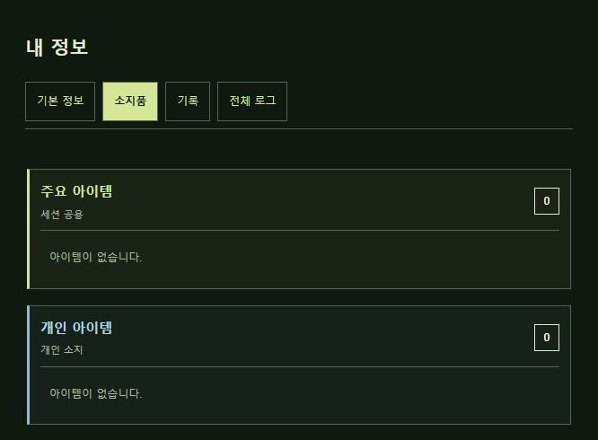
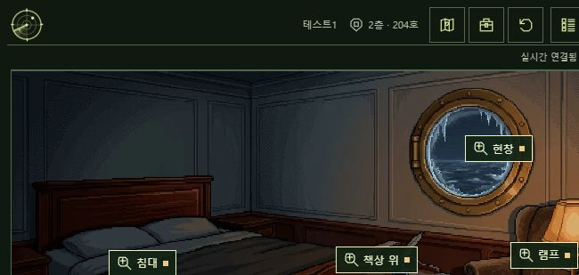
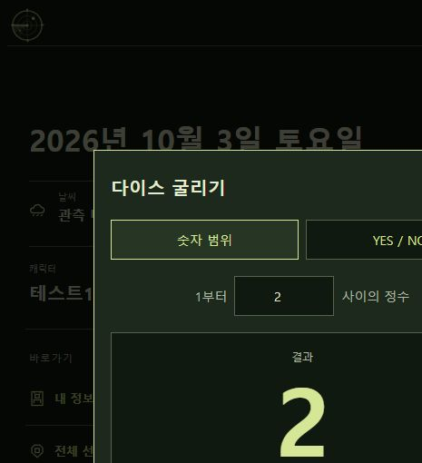
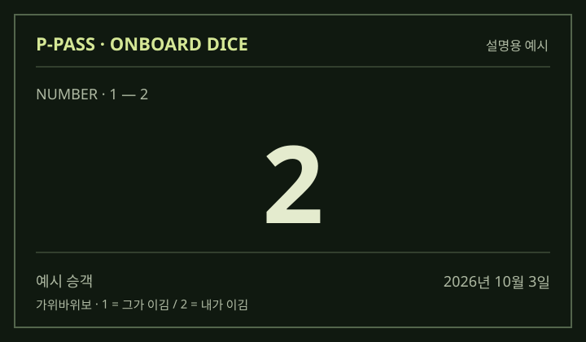

나와 그는 가위바위보를 했다. 누가 이겼나?
PROMETHEUS · PASSENGER GUIDE
P-Pass 사용 가이드
선내 탐색에 필요한 메뉴와 이용 규칙을 안내합니다.
02. 이동 및 조사 안내
- 다른 메뉴를 열어도 조사는 유지됩니다. 현재 방과 진행 중인 조사는 유지되고, 대기 시간도 계속 진행됩니다.
- 조사 시간이 끝나면 완료한 결과와 획득한 정보만 다시 볼 수 있습니다. 허용된 방 방문과 채팅은 계속 이용해 주세요.
- 이동과 조사에는 시간이 걸립니다. 다만 자유 방문 중에는 기다리지 않고 이동합니다.
- 이동·조사는 한 번에 하나씩 진행합니다. 이동을 취소하면 원래 방에 남고, 조사를 취소하면 결과와 보상을 받지 못합니다.
- 단서나 암호가 먼저 필요할 수 있습니다. 다른 승객이 조사 중인 대상은 잠시 기다려 주세요.
- 완료한 결과는 다시 읽을 수 있습니다. 같은 조사로 보상을 반복해서 받지는 못합니다.
03. 아이템과 정보 확인

- 개인 아이템은 각자 소지합니다. 조사로 얻은 개인 물품은 책상으로 전달할 수 있습니다.
- 주요 아이템은 한 명이 얻으면 모두에게 공유됩니다. 회차가 바뀌어도 유지되며, 따로 전달할 필요는 없습니다.
- 주요 정보는 내 정보 → 기록에서 확인해 주세요. 개인 조사 지문은 자동으로 공유되지 않습니다.
04. 채팅과 전체 로그

- 채팅은 같은 방의 승객끼리 이용합니다. 다른 방의 대화는 보이지 않습니다.
- 메뉴를 바꿔도 방에 머무릅니다. 실제 이동이 완료되어야 소속 방이 바뀝니다.
- 내 정보 → 전체 로그에서 머물렀던 동안의 대화와 내가 보낸 메시지를 다시 볼 수 있습니다.
- 자리를 비운 동안의 대화는 볼 수 없습니다. 같은 방에 다시 들어가도 공개되지 않습니다.
05. 객실 책상 사용법
- 다른 승객의 책상에서 받는 승객을 고르고 쪽지나 아이템을 남겨 주세요.
- 쪽지는 최대 16자까지 작성할 수 있습니다. 공백과 문장부호도 포함됩니다.
- 조사로 얻은 개인 아이템만 전달할 수 있습니다. 내 소지품에서는 빠지며, 상대가 이미 가진 물품은 보낼 수 없습니다.
- 받은 내용은 내 책상 → 확인하기에서 읽어 주세요. 기록은 수신자와 총괄만 볼 수 있습니다.
- 별도의 조사 대기 시간은 없습니다. 편파적 이용·독점·괴롭힘은 경고 대상이니 서로 배려해 주세요.
06. 미니게임 사용법
- 홈 → 미니게임에서 이용합니다. 롤플레잉 중 랜덤한 선택이 필요할 때 편하게 사용해 주세요.
- 결과가 나오면 결과 이미지를 복사해서 RP 스레드에 사용할 수 있습니다.
앱에서 다이스를 굴리는 화면 보기

RP 스레드 예시
가상의 승객과 결과 이미지를 사용한 예시입니다.
@passenger_a 님에게 답글
내가 이겼다. “오늘 음료는 네가 사는 거지?”

@passenger_a 님에게 답글
“좋아. 대신 다음엔 안 봐준다.” 웃으며 음료 두 잔을 주문했다.
여러 번 굴려 유리한 값을 받아내는 것에 대한 책임은 추궁하지 않습니다.
고신뢰의 러닝을 합시다.